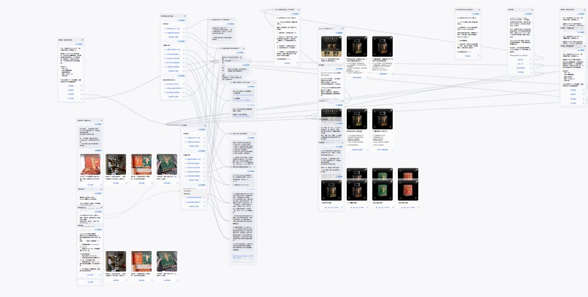
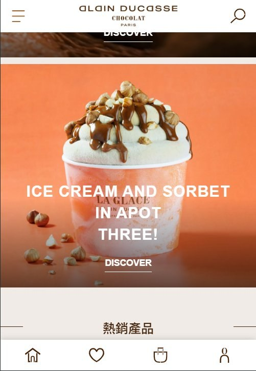
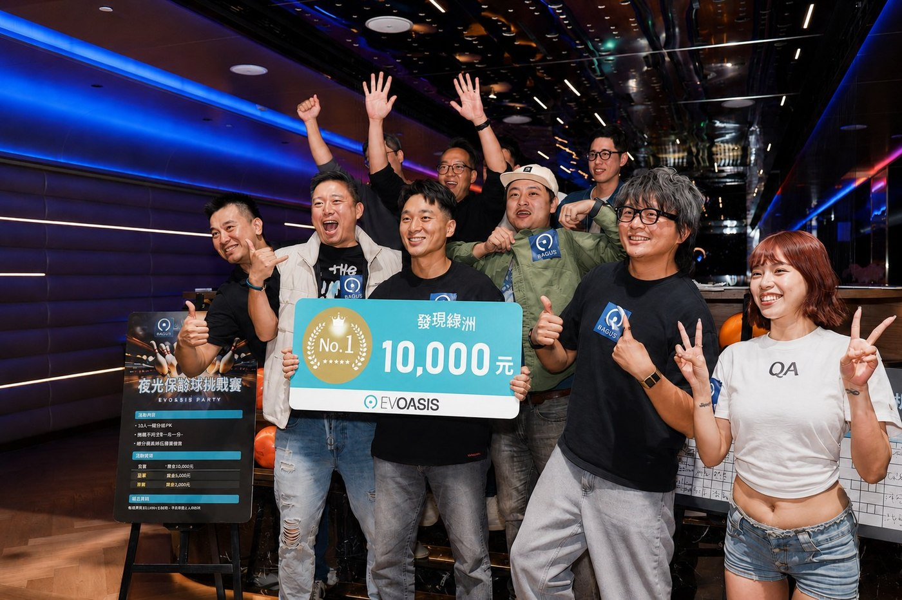

PORTFOLIO // 專案作品精選
// 精選專案與實戰成果
這裡記錄了我歷年來主導的代表性專案，涵蓋旗艦產品巡迴、大型公關活動、自動化 Martech 工作流建置等。所有數據均為真實成果。
PROJECT_MANAGEMENT
S23U 手機租賃服務
自主創業，鎖定演唱會與追星情境的高倍變焦攝影器材短期租賃需求，從 0 到 1 建立商業模式、預約流程與風控機制，10 個月完成回本。
客訴率 0%
查看 Case Study

MARTECH_AUTOMATIONHosset 虎勢 CRM LINE OA 自動化工作流
整合 Omnichat 與 Cyberbiz API，為企業量身打造線下掃碼、自動派券、會員 OpenID 綁定及 Looker Studio 數據同步的一條龍自動化方案。
轉換率提升 25%
查看 Case Study

MARTECH_AUTOMATIONALAIN DUCASSE 台灣官網建置與自動化
主導法國精品巧克力品牌 ALAIN DUCASSE 台灣市場的 Cyberbiz 電商官網規劃與建置，涵蓋網站資訊架構、商品分類邏輯與前台版型客製。
專案進行中
查看 Case Study
PROJECT_MANAGEMENT
Panasonic LUMIX G9II 體驗活動全國巡迴
獨立規劃執行 LUMIX G9II 全台 4 場城市巡迴體驗會，現場單日成交五單，累計 200+ 名專業攝影師與創作者到場，社群討論度提升 50%。
累計 200+ 人
查看 Case Study

PROJECT_MANAGEMENT發現綠洲 兩天一夜媒體公關活動
在資訊不對稱環境下主動承擔所有後勤執行。80 萬預算、台中洲際大飯店、40 家媒體到場，負責製作物、路書、飯店接洽、預算控管與現場攝影紀錄，確保活動如期完成。
預算 80 萬
查看 Case Study